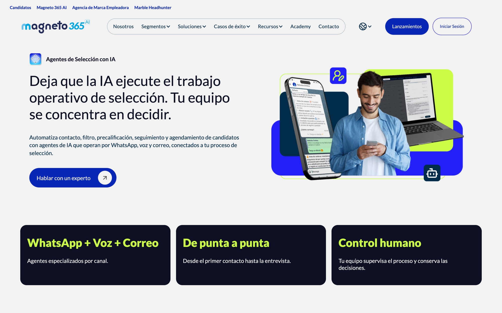
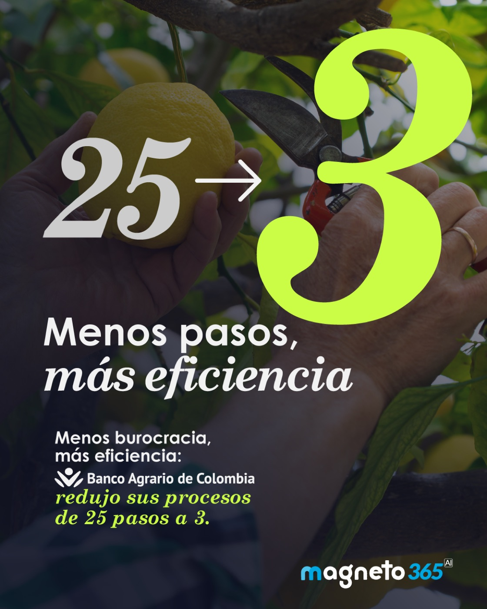
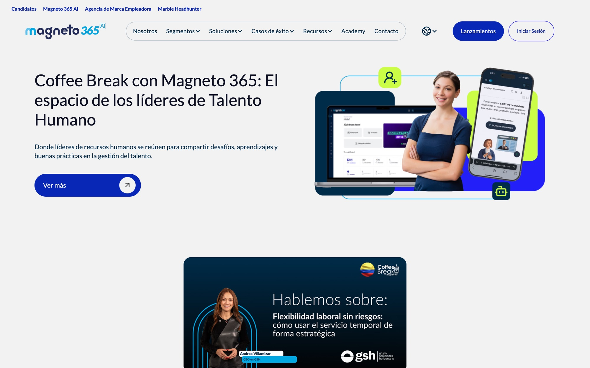

Caso 01Magneto 365 · Webflow · 2025–26
Un sitio para quince soluciones que tenía que sentirse como una sola.
Cada solución de Magneto 365 necesitaba su propia página sin romper la familia. La respuesta fue un sistema: etiqueta de producto, titular, una composición fija de persona, mockup y acento lima, y tres tarjetas de beneficio. Así el sitio escala a nuevas soluciones y a cuatro países sin rediseñar desde cero.


«La misma estructura en cada página, para que el usuario aprenda a leer el sitio una sola vez.»Principio de diseño del sistema · texto provisional


